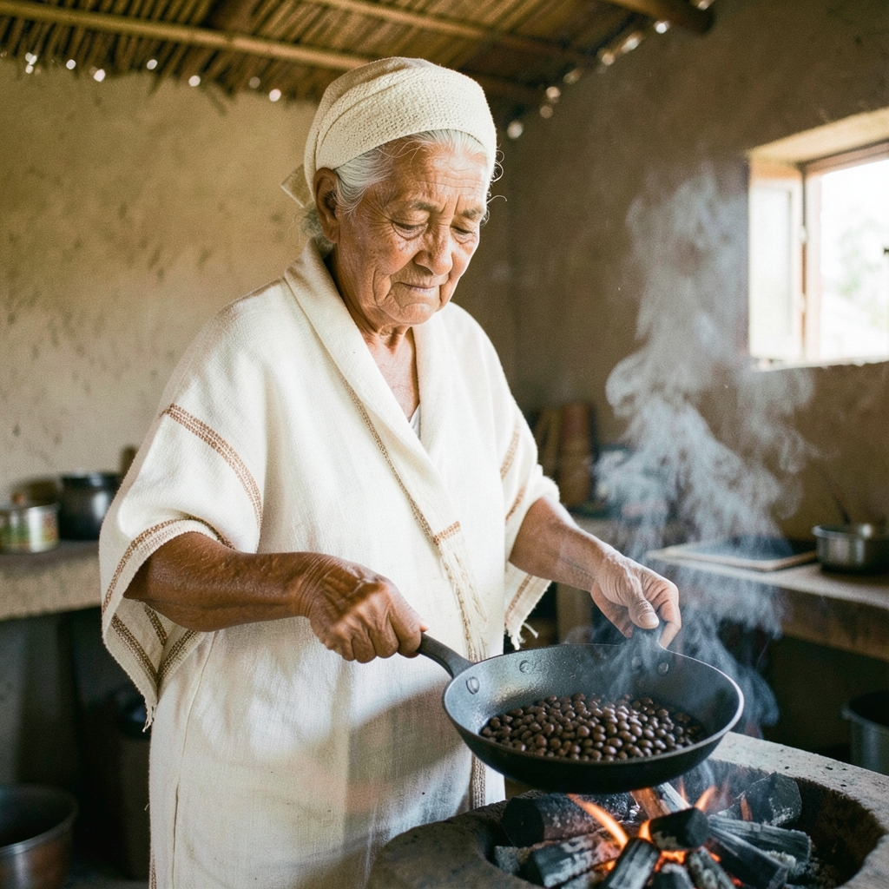
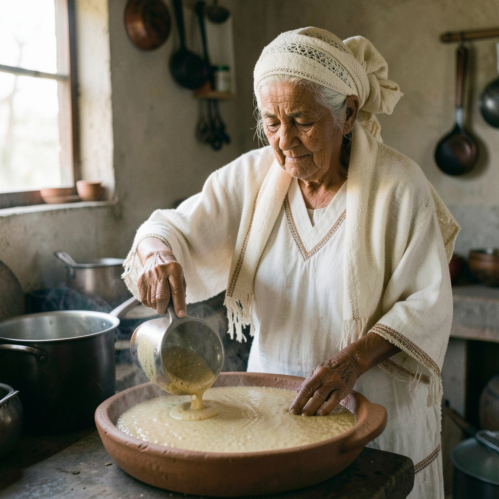

Production keyframes — shot_01 to shot_10
Fixed seeds 101–110, no reference image, real Cloudflare FLUX calls logged in runs.jsonl. Judge faces, hands and realism here.
shot_01 · seed 101 · 10,233 ms
shot_02 · seed 102 · 9,923 ms
shot_03 · seed 103 · 11,340 ms

shot_04 · seed 104 · 7,737 ms
shot_05 · seed 105 · 8,849 ms

shot_06 · seed 106 · 11,896 ms
shot_07 · seed 107 · 10,735 ms
shot_08 · seed 108 · 8,118 ms
shot_09 · seed 109 · 9,656 ms
shot_10 · seed 110 · 10,237 ms